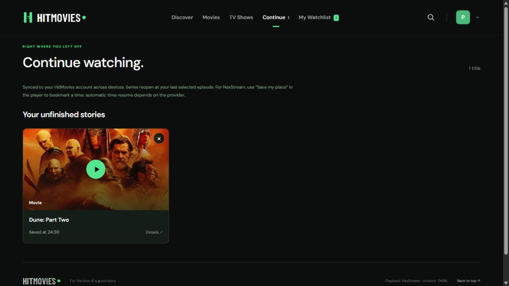

HitMovies for Windows
A dedicated Brave app window, maximized with normal window controls and movie fullscreen.
Download for Windows ↓Windows installation steps ↗Pick a movie. Start a series. Come back to your unfinished stories on another screen.
HITMOVIES / YOUR SPACE

The app connects to HitMovies online.
No movies are bundled in the download.
A dedicated Brave app window, maximized with normal window controls and movie fullscreen.
Download for Windows ↓Windows installation steps ↗The native iPhone and iPad wrapper, with inline video, landscape, and additional-window blocking.
Download iPhone IPA ↓iPhone installation steps ↗Open the full app in your browser. Create a username and password, then keep your stories with you.
Open the web app ↗Create an account using only a username and password. Choose the same profile on each device to find your saved watchlist and Continue Watching.
NexStream saves the selected episode. Use “Save my place” to bookmark a playback time; exact time resume depends on the provider. No email recovery is available.
Brave Shields can block many ads and trackers. For the optional HitMovies popup blocker, download the extension ZIP, extract it, then use Brave’s Extensions page → Developer mode → Load unpacked and select the extracted folder. It closes extra tabs opened by HitMovies. Complete removal of in-player ads is not guaranteed.
This is an unsigned app for sideloading, not an App Store installation. Apple signing and refresh requirements apply. Compiled for physical iOS devices; on-device installation and playback have not been independently tested.